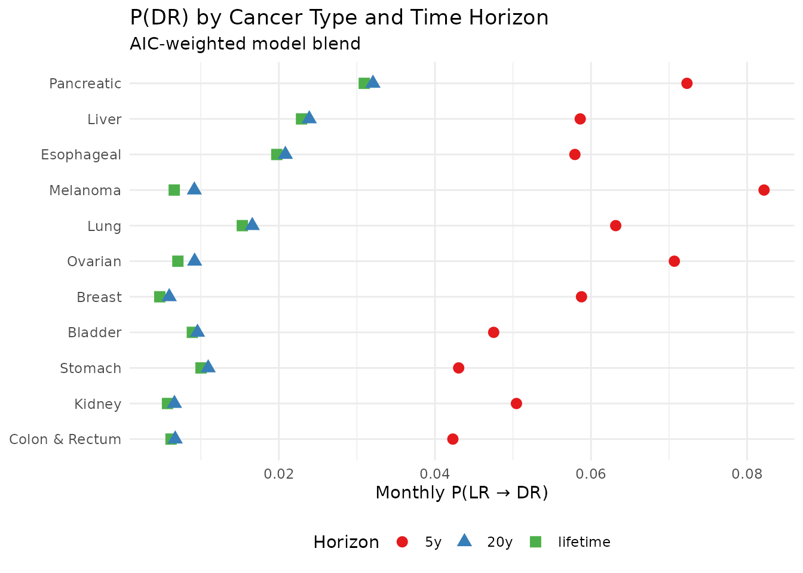
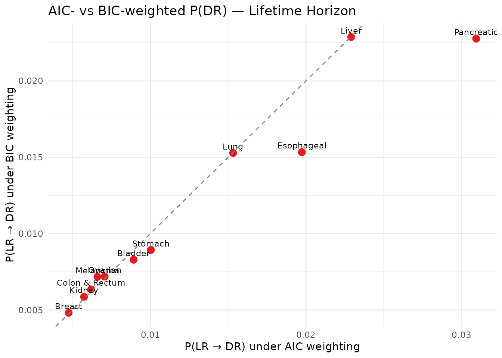

Multi-Tumour Analysis and Sensitivity Analyses with seerSurv
Sameer Mansoori, Shubhram Pandey, Rashi Rani, Barinder Singh, Murat Kurt
2026-03-20
Source:vignettes/multi-tumour-analysis.Rmd
multi-tumour-analysis.RmdOverview
This vignette demonstrates the batch analysis
workflow for all 11 cancer types in the bundled
tumour_data_seer dataset across all supported time horizons
("lifetime", "20y", "5y") and
both information criteria ("AIC", "BIC").
Load bundled datasets
data(lifetable_seer)
data(tumour_data_seer)
dplyr::glimpse(tumour_data_seer)
#> Rows: 22
#> Columns: 12
#> $ Tumor <chr> "Kidney", "Kidney", "Bladder", "Bladder", "Ovarian", "Ovari…
#> $ Recurrence <chr> "LR", "DR", "LR", "DR", "LR", "DR", "LR", "DR", "LR", "DR",…
#> $ S0 <dbl> 1, 1, 1, 1, 1, 1, 1, 1, 1, 1, 1, 1, 1, 1, 1, 1, 1, 1, 1, 1,…
#> $ S1 <dbl> 0.9750000, 0.4856000, 0.8898000, 0.3517000, 0.9523000, 0.77…
#> $ S2 <dbl> 0.9559000, 0.3427000, 0.8103000, 0.1943000, 0.9103000, 0.62…
#> $ S3 <dbl> 0.9376000, 0.2668000, 0.7660000, 0.1415000, 0.8798000, 0.50…
#> $ S4 <dbl> 0.9212000, 0.2245000, 0.7359000, 0.1189000, 0.8476000, 0.41…
#> $ S5 <dbl> 0.9049000, 0.1895000, 0.7123000, 0.1037000, 0.8186000, 0.34…
#> $ prop_male <dbl> 0.649, 0.712, 0.790, 0.735, 0.000, 0.000, 0.000, 0.000, 0.4…
#> $ mean_age <dbl> 61, 62, 65, 64, 59, 62, 61, 61, 65, 64, 63, 63, 63, 63, 61,…
#> $ N_LR <int> 11495, 11495, 6840, 6840, 6460, 6460, 93100, 93100, 17575, …
#> $ N_DR <int> 605, 605, 360, 360, 340, 340, 4900, 4900, 925, 925, 155, 15…Run all scenarios
scenarios <- c("lifetime", "20y", "5y")
criteria <- c("AIC", "BIC")
run_batch <- function(scen, crit) {
tumour_data_seer |>
group_by(Tumor) |>
summarise(
out = list(
run_tumour_analysis(
tumour = first(Tumor),
surv_vec_LR = c(S0[Recurrence == "LR"], S1[Recurrence == "LR"],
S2[Recurrence == "LR"], S3[Recurrence == "LR"],
S4[Recurrence == "LR"], S5[Recurrence == "LR"]),
surv_vec_DR = c(S0[Recurrence == "DR"], S1[Recurrence == "DR"],
S2[Recurrence == "DR"], S3[Recurrence == "DR"],
S4[Recurrence == "DR"], S5[Recurrence == "DR"]),
N_L = first(N_LR),
N_D = first(N_DR),
prop_male_LR = prop_male[Recurrence == "LR"],
mean_age_LR = mean_age[Recurrence == "LR"],
prop_male_DR = prop_male[Recurrence == "DR"],
mean_age_DR = mean_age[Recurrence == "DR"],
lifetable = lifetable_seer,
scenario = scen,
criterion = crit
)
),
.groups = "drop"
) |>
unnest(out) |>
mutate(scenario = scen, criterion = crit)
}
all_results <- bind_rows(
lapply(scenarios, function(s)
lapply(criteria, function(c) run_batch(s, c)) |> bind_rows()
)
)
dim(all_results)
#> [1] 66 10Base-case results (lifetime horizon, AIC)
base <- all_results |>
filter(scenario == "lifetime", criterion == "AIC") |>
select(Tumor, P_LL, P_DL_approach2, P_Death_L_approach2, M_months)
knitr::kable(base, digits = 5,
caption = "Base-case monthly transition probabilities (lifetime, AIC)")| Tumor | P_LL | P_DL_approach2 | P_Death_L_approach2 | M_months |
|---|---|---|---|---|
| Bladder | 0.99101 | 0.00892 | 0.00007 | 108.79987 |
| Breast | 0.99519 | 0.00474 | 0.00006 | 185.87608 |
| Colon & Rectum | 0.99377 | 0.00619 | 0.00004 | 152.09926 |
| Esophageal | 0.98020 | 0.01974 | 0.00006 | 50.54718 |
| Kidney | 0.99419 | 0.00574 | 0.00008 | 160.60925 |
| Liver | 0.97702 | 0.02291 | 0.00007 | 43.48845 |
| Lung | 0.98460 | 0.01532 | 0.00008 | 64.85504 |
| Melanoma | 0.99336 | 0.00660 | 0.00005 | 143.60317 |
| Ovarian | 0.99288 | 0.00706 | 0.00005 | 136.40131 |
| Pancreatic | 0.96900 | 0.03094 | 0.00006 | 32.25437 |
| Stomach | 0.98993 | 0.01003 | 0.00004 | 98.20475 |
Sensitivity: P(DR) by scenario and criterion
all_results |>
filter(criterion == "AIC") |>
mutate(scenario = factor(scenario, levels = c("5y", "20y", "lifetime"))) |>
ggplot(aes(x = P_DL_approach2, y = reorder(Tumor, P_DL_approach2),
colour = scenario, shape = scenario)) +
geom_point(size = 3) +
labs(
title = "P(DR) by Cancer Type and Time Horizon",
subtitle = "AIC-weighted model blend",
x = "Monthly P(LR → DR)",
y = NULL,
colour = "Horizon",
shape = "Horizon"
) +
scale_colour_brewer(palette = "Set1") +
theme_minimal(base_size = 11) +
theme(legend.position = "bottom")
P(DR) across scenarios and criteria
AIC vs BIC comparison (lifetime horizon)
all_results |>
filter(scenario == "lifetime") |>
select(Tumor, criterion, P_DL_approach2) |>
pivot_wider(names_from = criterion, values_from = P_DL_approach2) |>
ggplot(aes(x = AIC, y = BIC, label = Tumor)) +
geom_point(size = 3, colour = "#E41A1C") +
geom_text(size = 3, vjust = -0.6, hjust = 0.5) +
geom_abline(slope = 1, intercept = 0, linetype = "dashed", colour = "grey50") +
labs(
title = "AIC- vs BIC-weighted P(DR) — Lifetime Horizon",
x = "P(LR → DR) under AIC weighting",
y = "P(LR → DR) under BIC weighting"
) +
theme_minimal(base_size = 11)
AIC vs BIC — P(DR)
Exporting results
# Export combined results to CSV
write.csv(
all_results,
file = "seerSurv_all_results.csv",
row.names = FALSE
)
# Export base-case to Excel
openxlsx::write.xlsx(
base,
file = "seerSurv_basecase.xlsx",
sheetName = "Lifetime_AIC"
)Session information
sessionInfo()
#> R version 4.5.3 (2026-03-11)
#> Platform: x86_64-pc-linux-gnu
#> Running under: Ubuntu 24.04.3 LTS
#>
#> Matrix products: default
#> BLAS: /usr/lib/x86_64-linux-gnu/openblas-pthread/libblas.so.3
#> LAPACK: /usr/lib/x86_64-linux-gnu/openblas-pthread/libopenblasp-r0.3.26.so; LAPACK version 3.12.0
#>
#> locale:
#> [1] LC_CTYPE=C.UTF-8 LC_NUMERIC=C LC_TIME=C.UTF-8
#> [4] LC_COLLATE=C.UTF-8 LC_MONETARY=C.UTF-8 LC_MESSAGES=C.UTF-8
#> [7] LC_PAPER=C.UTF-8 LC_NAME=C LC_ADDRESS=C
#> [10] LC_TELEPHONE=C LC_MEASUREMENT=C.UTF-8 LC_IDENTIFICATION=C
#>
#> time zone: UTC
#> tzcode source: system (glibc)
#>
#> attached base packages:
#> [1] stats graphics grDevices utils datasets methods base
#>
#> other attached packages:
#> [1] ggplot2_4.0.2 tidyr_1.3.2 dplyr_1.2.0 seerSurv_0.1.0
#>
#> loaded via a namespace (and not attached):
#> [1] sass_0.4.10 generics_0.1.4 lattice_0.22-9
#> [4] digest_0.6.39 magrittr_2.0.4 evaluate_1.0.5
#> [7] grid_4.5.3 RColorBrewer_1.1-3 mvtnorm_1.3-6
#> [10] fastmap_1.2.0 jsonlite_2.0.0 Matrix_1.7-4
#> [13] mstate_0.3.3 deSolve_1.41 survival_3.8-6
#> [16] purrr_1.2.1 scales_1.4.0 codetools_0.2-20
#> [19] numDeriv_2016.8-1.1 textshaping_1.0.5 jquerylib_0.1.4
#> [22] cli_3.6.5 rlang_1.1.7 splines_4.5.3
#> [25] withr_3.0.2 cachem_1.1.0 yaml_2.3.12
#> [28] flexsurv_2.3.2 tools_4.5.3 vctrs_0.7.1
#> [31] R6_2.6.1 lifecycle_1.0.5 muhaz_1.2.6.4
#> [34] fs_1.6.7 ragg_1.5.1 pkgconfig_2.0.3
#> [37] desc_1.4.3 pkgdown_2.2.0 pillar_1.11.1
#> [40] bslib_0.10.0 gtable_0.3.6 glue_1.8.0
#> [43] data.table_1.18.2.1 Rcpp_1.1.1 statmod_1.5.1
#> [46] systemfonts_1.3.2 xfun_0.56 tibble_3.3.1
#> [49] tidyselect_1.2.1 knitr_1.51 farver_2.1.2
#> [52] htmltools_0.5.9 labeling_0.4.3 rmarkdown_2.30
#> [55] compiler_4.5.3 S7_0.2.1 quadprog_1.5-8